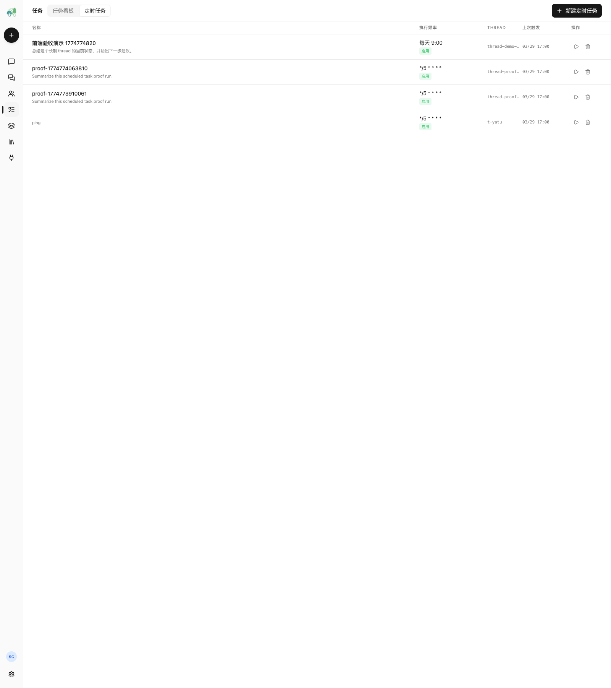
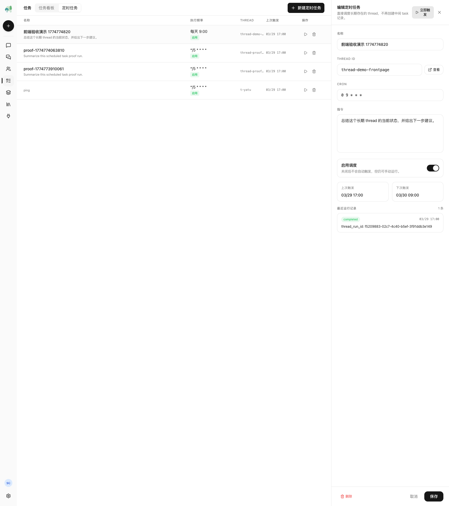

Leon Engineering Bulletin
2026-03-29 · Asia/Shanghai
Special Edition
Thread 定时任务成果公报
Phase 1 Done
定时任务现在真的会驱动 thread 执行了
这次交付不再停留在“到点创建一条记录”。后端已经形成完整的 thread-bound scheduled task 执行链路， 包括 direct、inline busy-thread、followup 三条真实路径，并且 run 记录会留下 started、run id、completed/failed 的完整痕迹。
79
针对性回归测试通过，覆盖 scheduled task、followup queue、cron 和 task 旧链路。
3
已闭环执行路径：direct dispatch、inline steer、followup run。
0
没有把 phase 1 又绕回 `panel_tasks`，也没有把 `core/tools/task` 混进来。
Embedded Screens
Playwright 抓的是产品前端，不是说明页


What Changed
结果不再只是“能触发”
- 创建 scheduled task 时会立刻算出下一次触发时间，不再留下 `next_trigger_at = 0` 的脏数据。
- 更新时会拒绝空的 `thread_id/name/instruction`，删除时会联删对应 runs。
- 不存在的 scheduled task 手动触发会返回 404，不会再穿成 500。
- scheduler 启动后立即首轮检查，并且单次异常不会把后台循环直接打死。
Busy Thread Fixed
最难的点是 busy-thread 关联
现在 queue 层会持久化 `scheduled_task_run_id`，所以 thread 忙的时候， scheduled run 不会在排队这一步失去身份。后续不管是当前 run 内 inline 消费， 还是结束后走 followup run，都能把同一个 scheduled run 继续追踪下去。
queue extra metadata
inline dispatch mark
followup dispatch mark
run finalization
Guard Rails
边界保持住了
`scheduled_tasks` 仍然是独立域模块。它依赖 thread delivery，
但没有反向耦合进 `panel_tasks`。
`core/tools/task` 继续保持外围 checklist 语义，没有被误并进 scheduler 主链路。
Execution Ledger
三条执行路径现在长这样
状态链路
Direct scheduler 直接起 run，run 记录写入 `started_at + thread_run_id`。
then
Inline Busy-Thread steering middleware 消费 queued 消息，先把 scheduled run 标成 `dispatched`，等当前 run 结束再落 `completed/failed`。
or
Followup 当前 run 结束后新起一个 run，scheduled run 带着原始 id 继续执行。
验收样例
inline
status: completed
dispatch_result: { status: "started", routing: "inline", run_id: "run-inline" }
followup
status: dispatched
dispatch_result: { status: "started", routing: "followup", run_id: "run-followup" }
direct
status: completed
run finalization wired through message metadata
Verification
回归和 YATU 证据
$ uv run pytest -q tests/test_scheduled_task_service.py tests/test_scheduled_task_api.py tests/test_followup_requeue.py tests/test_cron_service.py tests/test_cron_job_service.py tests/test_task_service.py
79 passed in 0.61s
$ YATU script checks
created_next_trigger_at True
inline_record status=completed run_id=run-inline
followup_record status=dispatched run_id=run-followup
direct_record status=completed